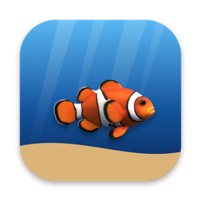

Privacy Policy
Fish Ocean · updated November 21, 2026
Fish Ocean does not collect personal information, does not use analytics or advertising, and does not track you.
What stays on your Mac
Your fish (its name, size, age, journal and settings) is saved only on your Mac. From version 1.3 the app also keeps, on your Mac only, the dates of the last 14 days the ocean was on your screen, so it can choose a good moment to show a tip or ask for an App Store rating. None of this is sent anywhere, except the anonymous usage numbers described under “Usage numbers” below.
Swimming with friends
If you're signed in to iCloud, a small amount of data about your fish is stored in Apple's iCloud (CloudKit public database), so friends can find it if you share your code: a random fish code, the fish's name and color, and when it was last online. When you add or invite a friend, the invitation between your two fish codes is stored there too. This data is not linked to your Apple ID name or email, and we cannot see who you are. From version 1.5 on the Mac and 1.1 on Windows, the record also says which kind of fish it is (for example a clownfish) and your country, taken from your computer's region setting (not from your location). From version 1.5.1 on the Mac and 1.1.1 on Windows, it also says which version of the app you use and, if you have Full Ocean, how it came (bought, from an offer code, through Family Sharing, a free trial on Windows from version 1.1.12, or a test copy) and when; never your payment details, which only Apple or Microsoft see. As the developer we can see these records (a fish's code, name, color, kind, country, app version, Full Ocean and how it came, when it was first and last online, and whether it is a Mac or Windows fish), and we look at them to understand how Fish Ocean is used, to help when you ask for support, and to stop abuse. They still say nothing about who you are.
If you ask us for help changing your fish, we can leave a signed request for your fish code in the same database. Your app checks that the request really comes from us and then asks you first; nothing changes unless you click Change.
From version 1.3, when someone adds your fish's code you get a friend request, and their fish can't visit until you accept. Your friend requests and the fish you remove, decline or block are kept only on your Mac. Fish names that look offensive or contain contact details are shown as “Fish”.
While fish swim together over the internet, each app sends its fish's position and animation through our relay server (hosted on Cloudflare), which forwards it to the other fish in the same private room. The relay keeps nothing: when a room is empty it is forgotten.
The Open Ocean (optional)
From version 1.5 on the Mac and 1.1 on Windows you can turn on the Open Ocean, where fish of people you don't know pass by your screen. It is off until you turn it on. From version 1.5.1 on the Mac and 1.1.1 on Windows, the first screen of a new app offers it with the box already ticked, and people who update are asked once; nothing connects until you agree, and you can turn it off at any time in Settings.
While it is on, the app connects to our Open Ocean server (hosted on Cloudflare) and sends your fish's code, its name, color and kind, whether it has Full Ocean, and the width of your ocean. It also sends a random secret kept on your device (on the Mac, from version 1.5.2, in your Mac's keychain); the server stores only a one-way hash of it, so no one else can join as your fish. The server uses this to choose which fish visit each other. During a visit the other person's app sees only your fish's name, color and kind, never your fish code, and the fish swim through the same relay as friends do, in a private room that is forgotten when the visit ends.
From version 1.5.2 on the Mac and 1.1.6 on Windows, a visiting fish can also show a small flag of its country, next to its name. The country comes from your computer's region setting (two letters, such as JP), never from your location. It is off unless you turn on "Show my country's flag" in Settings; while it is off your app doesn't send it, and you can turn it off again at any time. (Windows 1.1.6 to 1.1.9 had it on by default; from Windows 1.1.10 it is off for everyone until they turn it on.) The flag is sent only to the fish swimming with yours (Open Ocean visits and friends' visits), through the same relay, and is not stored.
The server keeps which fish codes have met (for 90 days, so fish can meet again), each visit (7 days), and how many oceans your fish visited today (2 days). It keeps the fish codes you block, so you never meet again. If you report a fish, the report (your fish code, the other fish's code, a reason from a short fixed list, and the time) is kept for 90 days; it keeps no names and nothing typed. We get a notification on our phone without any fish details, look at the report, and can stop a fish code from joining the Open Ocean. The list of fish you met is kept only on your device. To keep one computer or network from flooding the Open Ocean, the server counts how often each internet (IP) address connects and how many new fish codes join from it; it uses the address only for these short-lived counts (in memory and in Cloudflare's rate limiting) and never stores or logs it.
Updates
When a brand-new fish is made (Mac 1.5.1, Windows 1.1.1 and later), the app asks our Open Ocean server once for the next free starter name, so new fish get different names. The request carries nothing about you or your fish, and the server keeps only a count.
From version 1.4.2, the Mac app asks Apple's App Store once a day which version of Fish Ocean is current in your country, so it can tell you when an update is out. The request goes straight to Apple and carries no information about you or your fish.
On Windows
Fish Ocean for Windows works the same way. Your fish and settings are saved only on your PC. Windows PCs can't use iCloud directly, so the Windows app reaches the same Apple CloudKit public database through our own small server on Cloudflare, which passes each request on and stores nothing of it (it keeps only the usage steps described below). To protect your fish code, the app keeps a random secret on your PC; CloudKit stores only a one-way hash of it, so only your app can change your fish's record. The server's logs contain only error types, never names, codes or messages. Live swimming uses the same relay as on the Mac.
From version 1.1.4, the Windows app also sends our Cloudflare server a few anonymous usage steps, tied only to your random fish code: whether you finished the welcome, when you first fed your fish, how many minutes the desktop (and so your fish) was visible on the first day and in total, on how many days the app ran, how many times the Full Ocean offer was shown and how it was answered (including taps on “Set free”), the error code if a purchase failed, whether the app asked you for a rating, and the app version. From version 1.1.5 it also sends where your last tap on “Set free” was (the offer, Settings or the menu) and how many times you opened Settings, and from version 1.1.12 whether you started the free 3-day Full Ocean trial and whether it ended or you then bought Full Ocean. It never includes your fish’s name, your name, your IP address, or anything you type. We use these steps only to see where people get stuck and to improve the app.
From version 1.1.8, the Windows app also asks the Microsoft Store which of our Store links it was installed from and, if there was one, adds that link's campaign tag (a short label we put in the links we share, such as one per website) to your fish's record. It only tells us which links bring people to Fish Ocean; it contains no personal data and nothing about you or your PC.
Usage numbers
From Windows version 1.1.12 and Mac version 1.5.2, the app sends our Cloudflare server a few anonymous counts about how Fish Ocean is used, so we can see how the people who keep it enjoy it. They are sent at most once an hour, and only when they changed. On Windows they are tied only to your random fish code. On the Mac they are not tied to your fish at all: instead of your fish code, the Mac app sends a random install number that it makes once on your Mac (it has the same form as a fish code but belongs to no fish), so the numbers can't be connected to your fish, its name, its country or its friends. They cover the last 7 days: how many minutes your fish's screen was in view in each hour of the day (by your local time), how many times a day your fish came into view after being covered and how long that usually lasted, how many times you fed your fish, met a fish in the Open Ocean and opened Settings, and also how many times you renamed your fish, how many friends it has, how many screens your computer has, whether your fish's screen is the main one and its size in pixels, whether the computer is a laptop or a desktop (whether it has a battery), and the app version. The Mac app also sends on how many of the last 14 days it ran, how many minutes your fish was in view in total, when you first fed it and whether it asked you for a rating, with a random key it makes once so that only your Mac can update its numbers (the server keeps only a one-way hash of the key). From Windows version 1.1.14 and Mac version 1.5.4, the app may also ask you once how you found Fish Ocean and what you like most about it. Each answer is one tap on a fixed list (for example “TikTok” or “A friend”), or “Not now”, which never asks again; the answer is sent with these numbers and nothing can be typed. From Windows version 1.1.15 and Mac version 1.5.4, a free fish can show a small bubble that says it wants to explore; the app counts how many times that bubble showed and whether a tap on “Set free” came from it, and sends those two counts the same way. From Windows version 1.1.16 and Mac version 1.5.5, when a purchase of Full Ocean doesn't finish, the app also counts how many times that happened, the short error code the store gave (for example a network error), how many seconds the store's window was open, and how many messages you sent us from the app; nothing about your payment. From Windows version 1.1.18 and Mac version 1.5.7, a new fish's short welcome tour also sends how far it got (step 1, 2 or 3) and whether it was finished or closed. These numbers never include your fish's name, your name, your IP address, anything you type, or anything about what is on your screen or which apps you use: the app only notices whether your fish's screen is covered, never by what.
Messages you send us
From Windows version 1.1.16 and Mac version 1.5.5, “Tell us” and “Send Feedback…” open a small box in the app. If you press Send, the text you typed goes to our Cloudflare server together with what kind of message it is (feedback, or about a purchase), the app version, Mac or Windows, and for a purchase how it ended and the store's error code. On Windows it is tied to your random fish code; on the Mac to the random install number described under “Usage numbers”, not to your fish. Your IP address is not stored with it (it is used only, in scrambled form, to stop a flood of messages). We read the messages to help you and to fix problems. They are deleted after 180 days; to have yours deleted sooner, email us. Please don't put passwords or card numbers in a message. If you prefer, the box also offers to email us instead.
Purchases
The optional in-app purchase is handled entirely by Apple on the Mac and by Microsoft on Windows. We never see payment details.
Children
Fish Ocean does not knowingly collect any personal information from anyone, including children.
Contact
Questions? Email amyzdevelopment@gmail.com. "Report…" in the app only opens a new email in your own mail app (a report includes the reported fish's name and code and the app version); nothing is sent unless you send it. For "Send Feedback…" and "Tell us", see “Messages you send us” above.